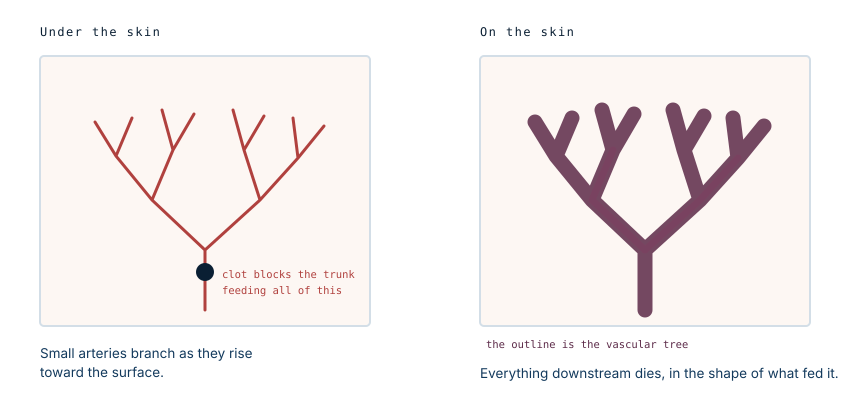
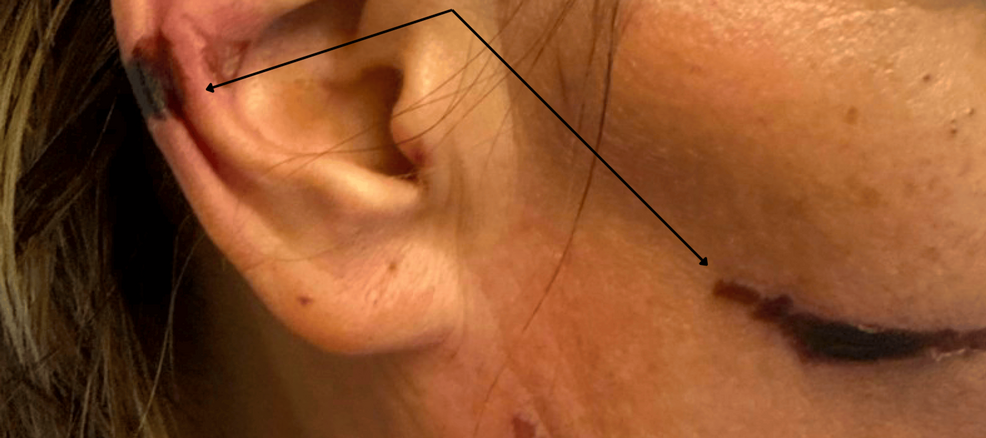

Purple ears: the adulterant, not the drug
A painful rash spread across her face and ears over two days. Her neutrophils were falling. Her antibody panel came back pointing in two directions at once, which is not how autoimmune vasculitis usually behaves. The pattern named the cause, and the cause was not the cocaine.
What levamisole is doing in cocaine
Levamisole was developed as a veterinary and human antiparasitic drug, and was later used briefly in cancer treatment. It was withdrawn from human use in North America because it caused agranulocytosis — a collapse of the white cells that fight bacterial infection.
It then reappeared in the drug supply. It is a cheap white powder that mixes invisibly into cocaine, but it is not simply bulk filler: it appears to act on the same reward pathways and is thought to prolong the effect, which is why traffickers add it rather than something inert. At the height of the problem, surveillance suggested a large majority of cocaine seized in the United States contained it.
So the person using the drug has no way of knowing they are also taking a compound that can destroy their skin and their bone marrow.
Why the rash has that shape
The word used for it is retiform, meaning net-like. It is not a general redness or a scatter of spots. It is a branching, angular, map-like pattern with jagged borders, and the shape is diagnostic in itself.
The reason is that the pattern is a picture of the blood vessels underneath. Small arteries branch as they rise toward the skin surface, each supplying its own downstream territory. When clots block those vessels, everything downstream dies — and the dead area takes the exact branching shape of the tree that fed it.

Why the ears
Ear involvement is the single most characteristic feature, and in published series it is the finding that most reliably points to levamisole rather than to a primary vasculitis.
The ear is an unforgiving piece of anatomy for this. It is cold, it sits at the end of the circulation, it is thin skin over cartilage with very little tissue to buffer an interruption, and its blood supply has few alternative routes. Anything that blocks small vessels shows up there first and worst. In severe cases the outer ear becomes frankly necrotic.

The antibody result that gives it away
This is the part of the case worth understanding properly, because it is where the diagnosis is usually made or missed.
ANCA testing by immunofluorescence produces one of two patterns, perinuclear or cytoplasmic. In genuine ANCA-associated vasculitis, patients are typically positive for one. This patient was positive for both, with an anti-proteinase-3 titre of 1:320.
Dual positivity is unusual in primary autoimmune vasculitis and common in levamisole-induced disease, where patients also frequently show antinuclear antibodies and antiphospholipid antibodies. A panel that lights up in every direction at once is less a sign of severe autoimmunity than a sign that something is driving the immune system indiscriminately.
Set beside purpura on the ears and a falling neutrophil count, the picture is close to specific.
Why the diagnosis matters more than it looks
Mistaking this for granulomatosis with polyangiitis has real consequences. That diagnosis leads to long-term immunosuppression, which in a patient whose neutrophils are already being destroyed is the wrong direction, and it leaves the actual cause in place.
The neutropenia is the part that can kill. Levamisole can drive the neutrophil count down to levels where ordinary bacteria become life-threatening, and the skin lesions are often the warning that arrives first.
Treatment
The central treatment is stopping exposure. Levamisole clears quickly, and once it is gone the process is self-limiting: the neutrophil count generally recovers over days to weeks, and the skin lesions settle. Reported cases have used supportive care, with steroids and, where the marrow is slow to recover, granulocyte colony-stimulating factor.
What does not resolve is tissue that has already died. Full-thickness necrosis, particularly of the ears, may need debridement and reconstruction, and severe cases have progressed to secondary infection and limb loss.
Recurrence follows re-exposure. That makes this a diagnosis where the conversation about the drug supply is not incidental to the medicine — it is the treatment.
What this case teaches
Three findings that individually mean little are close to diagnostic together: retiform purpura with the ears involved, neutropenia, and an ANCA panel positive in both patterns. The shape of the rash is doing real diagnostic work, because it maps the occluded vessels beneath it rather than describing a colour. And the exposure history is not a social detail to be taken at the end of the consultation — here it is the whole diagnosis, and asking for it is the intervention.